Eclipse Overview
Eclipse in C++ provides an Integrated Development Environment (IDE) that allows developers to write, build, and debug C++ programs. Eclipse itself is written in Java and can be used in multiple platforms (Microsoft Windows, Linux and Mac OS X).
Besides C++, Eclipse can also be used to develop applications in various programming languages such as Java, PHP, Python and more.
<== Please click the items on the left menu
Using Eclipse/C++ in the labs
Step 1: Launch Eclipse
The installed Eclipse can be found on your desktop
Step 2: Set the default workspace
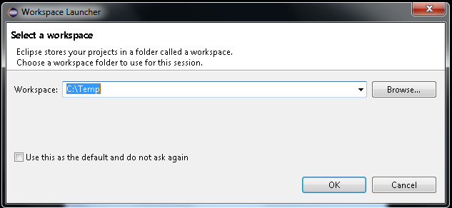For students, we only provide read/write access to specific folders (e.g. C:\Temp). Please remember to back up your work because the content will be removed when the computer is rebooted.
Developing a HelloWorld application using Eclipse
Step 1: Launch Eclipse
(For details, see "Using Eclipse/C++ in the labs")
Step 2: Select the workspace
Workspace stores all your C++ source codes.
1. Please click "browse" to choose a path that you can memorize (e.g. Your desktop). In this example, a path "C:\Temp" is used.
2. After that, click "OK".
Step 3: Close the Welcome screen
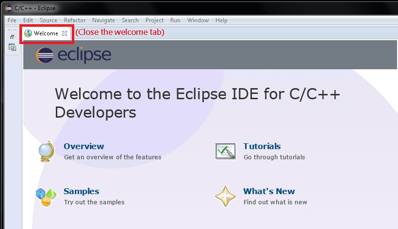Step 4: Create a new C++ project
Project helps you to organize your C++ source code file(s).
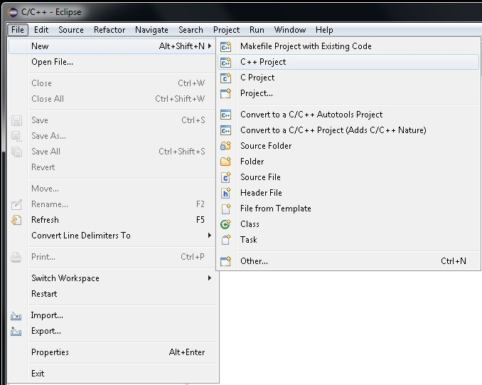Step 5: Give the name of a project and select the C++ compiler tool
A compiler converts C++ source codes to object codes. These object codes can be used to create executable files
Note: for MacOS users, you may choose a compiler named like "MacOS g++", "MacOS gcc", or something similar.
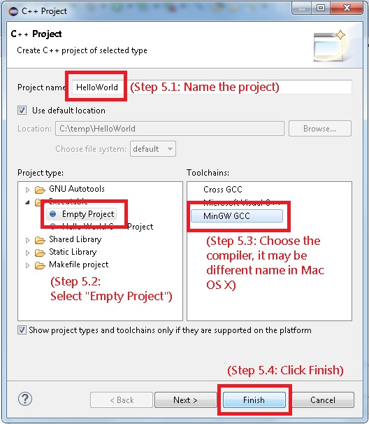Step 6: Add a source code file to the project
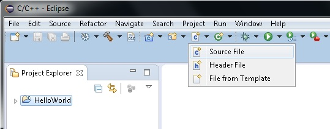Step 7: Name the source code file
You can choose your favorite file name. In this example, we use "main.cpp". Then click Finish.
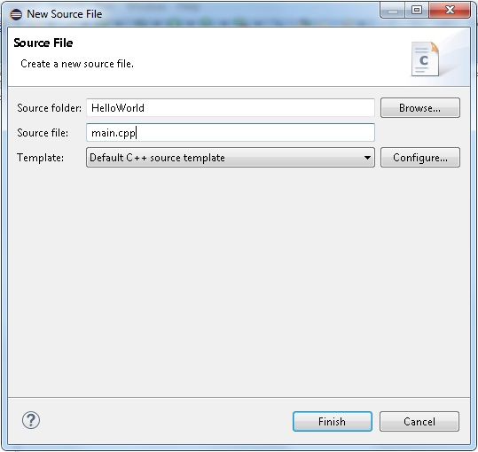Step 8: Edit and save the C++ source code file
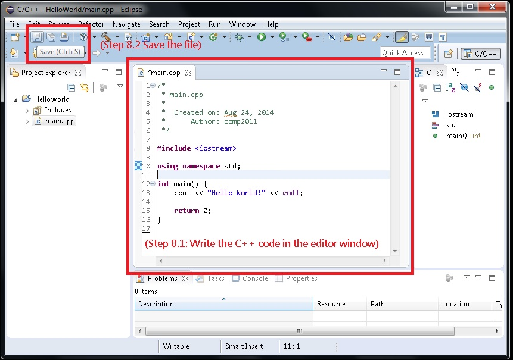** Notice ** remember to save the file. A star (*) is used to indicate that the file is unsaved. You will encounter some unknown errors if you forget to save the file.
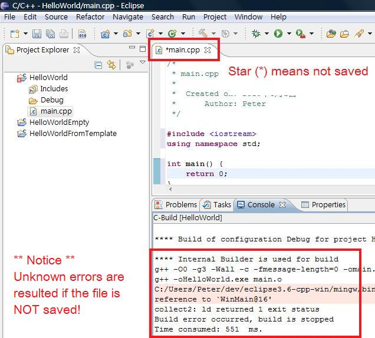Step 9: Click the hammer button to compile the source code
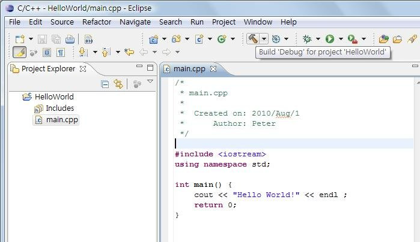Step 10: Click the play button to execute the program and view the output result.
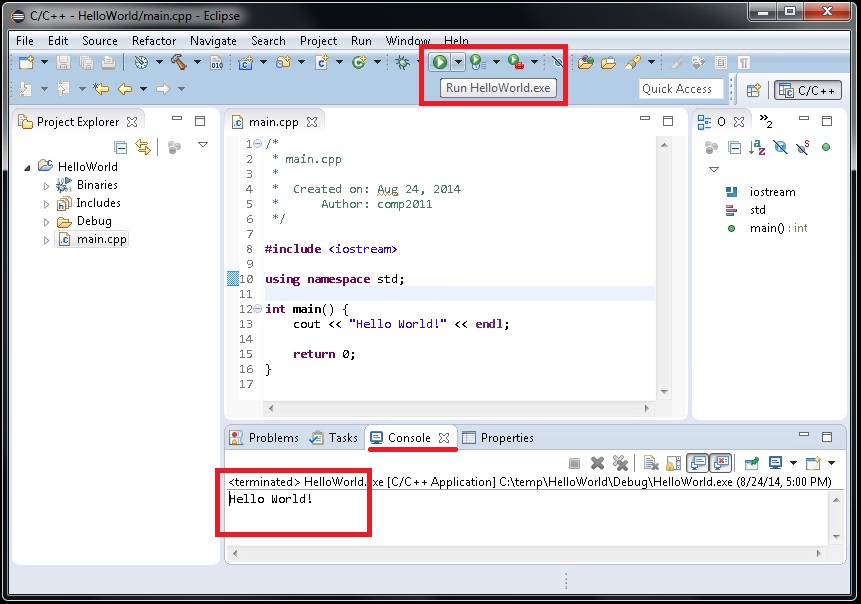Moving C++ projects from one machine to another
To export the files: Copy the source files (.cpp / .h) from your project and Back up them in an external storage, an email, or a network repository.

To import the files: Make sure your files are properly unzipped. Create an empty C++ project in your another machine. Drag and Drop the files to be imported to the empty project. Select "Copy Files" when the dialog pops up.

Step 1: Download and install the JDK 1.8 or above
Most PC shipped with Java JRE (Java Run-time Environment) already. However some of them are with 32-bits which will not be able to support Eclipse. You are advised to uninstall the existing JRE if it is a 32-bit system and install a 64 bits Java. If you are a CS student, or plan to develop Java program, probably you may want to install JDK (Java Development Kit) instead. JDK is a super-set of JRE. You are recommended to use JDK version 8 which can be downloaded here (https://www.oracle.com/technetwork/java/javase/downloads/jdk8-downloads-2133151.html) as some new versions require additional manual setup which can be complicated. You should accept the license and choose the "Windows x64" version (e.g. jdk-8u241-windows-x64.exe). A free account registration at Oracle may be required. Note that our Eclipse is for your 64-bit Windows.
Step 2: Download the Eclipse/C++ package for Mircosoft Windows
Click here to download Windows Eclipse 4.6.2 (our official version)
Step 3: Extract all the files using WinZip or WinRar or some other software (must extract first)
Step 4: Launch Eclipse
To launch Eclipse, just run Eclipse.exe inside.

Note: If you cannot compile and run a C++ program in Eclipse successfully. (e.g. blank output even when you have cout at the very beginning in your program) Make sure you have selected to use the "MinGW compiler" when you create the C++ project. Properly create a new project and try again. Also make sure you have saved your files (e.g. ctrl-s) before compilation.
Using Eclipse at home (MacOS)
Step 1: Install XCode from App Store
You will be asked to apply for an Apple ID/Password when you download this App. This app is free and no in-app purchased is needed for our course.
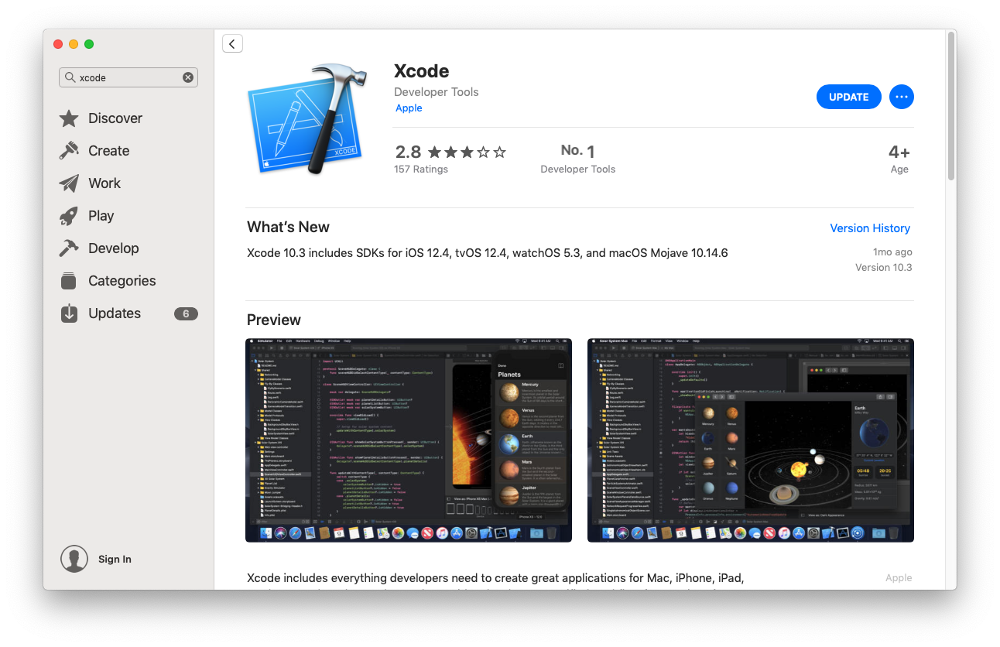In fact you may somehow find XCode is pretty user friendly when you program in C++. You may use XCode to program your C++ or you may also use eclipse which we recommend. You need to execute XCode for at least once to accept the agreement to further proceed your Eclipse installation, if you wish to use Eclipse.
Step 2: Download Eclipse for C++
Access the download page via the URL:Download Eclipse 2019-03 (version 4.11) . 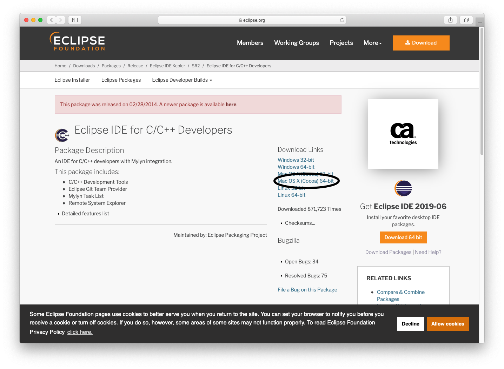
Step 3: Install Eclipse for C++
After that, double-click the downloaded file and you will need to drag the Eclipse Icon into your Application folder to "install" it.
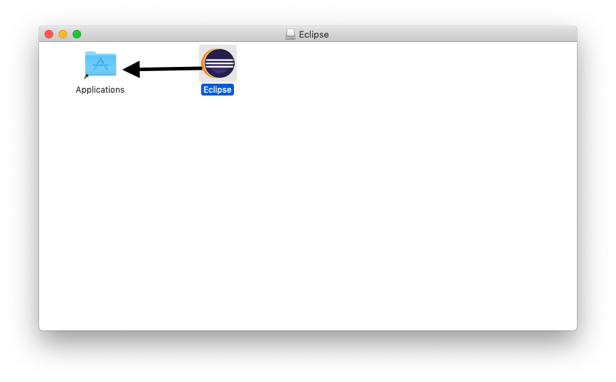Step 3.5: Install Java 1.8 JDK
It turns out some of the mac users are unable to launch eclipse with the following error message
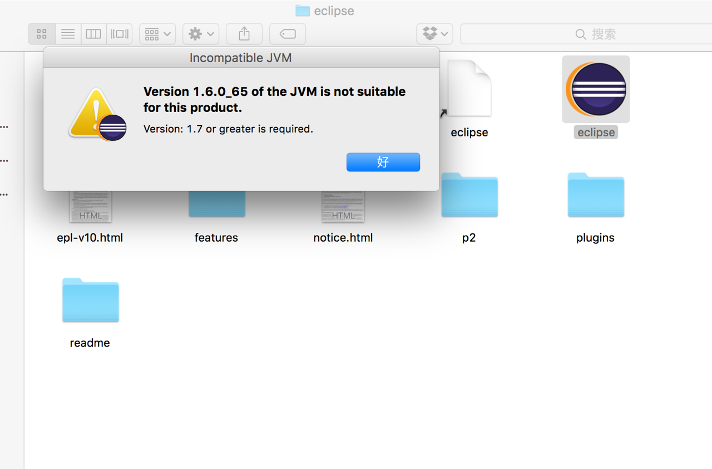
In this case please download Java JDK (not JRE) with 1.8 or above.
http://www.oracle.com/technetwork/java/javase/downloads/index.html
Done Installation of Eclipse
You can launch Eclipse or XCode from your Finder > Application. Here is a video for you to follow to compile a Hello World application on Eclipse.FAQ
Q: Nothing happens when I try to compile and run my program in Eclipse!
A: Make sure you have chosen the correct compiler, i.e., MinGW GCC for Windows Eclipse (for MacOS users, you may choose a compiler named like "MacOS g++", "MacOS gcc", or something similar.). If you are running the Eclipse from the lab, make sure you are running the correct version of Eclipse from the L drive too.
Q: A compilation error "cannot open output file program.exe: Permission denied" happens when I try to compile the program! When I try to run the program anyway, it seems to be running an outdated version of my program!
A: This error only happens to Windows users when you have tried to compile your code when the previously compiled program was running. Eclipse won't be able to update it.
- Solution 0: To avoid this problem, make sure the program has been stopped before recompilation. You may click the stop button as indicated: 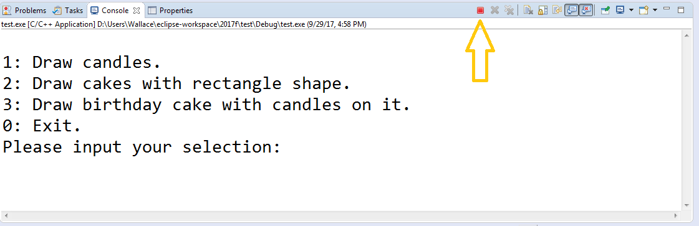
You may also watch this video for illustration of the problem and solution. - Solution 1: Delete the "Debug" folder (and "Release" if you also have it) of your project from the project explorer.
- Solution 2: Open the task manager, and kill the previouly compiled program (e.g. program.exe) that you are running.
- Solution 3: Restart Eclipse.
Q: I am using Eclipse on MacOS, and some compilation errors happen for lines that use the new C++11 syntax. What to do?
A: For Mac Eclipse, go to "Project" (the menu at the top) -> "C/C++ Build" -> "Settings" -> "GCC Compiler" -> "Dialect" -> change language standard to "C++11". The actual options may have different names or locations on your Mac Eclipse.